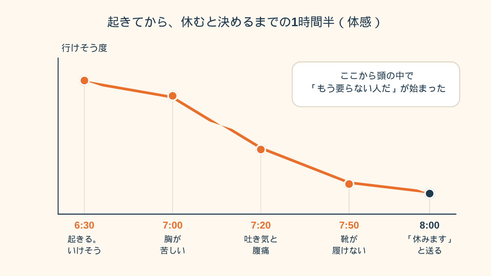
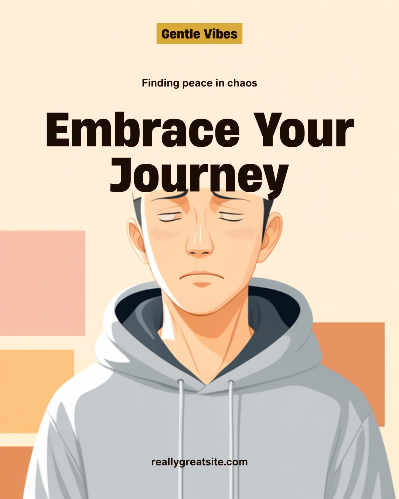
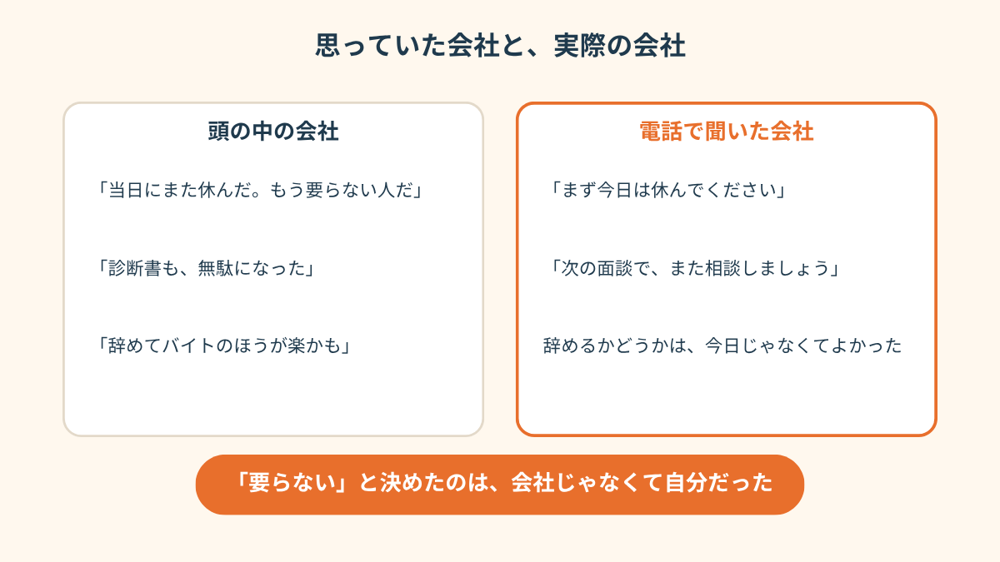

目覚ましが鳴る前に目が覚めて、起き上がろうとしたら、息がうまく吸えなかった。
「え、今日じゃん」
そう思ったら、今度は胃のあたりがぎゅっと縮んだ。
前の晩は、ふつうだった
28歳、物流会社で事務をしてました。
入社2年目の8月から、うつ病で休職。
復職日は、11月1日。3ヶ月ぶりの出社でした。
前の日の夜は、自分でもびっくりするくらい、ふつうだったんです。
スーツをハンガーにかけて、カバンに社員証と財布を入れて、風呂に入って、23時前には布団に入った。
「あ、いけるじゃん」って、ちょっと思ってました。
今思えば、あれが一番よくなかったのかもしれない。
朝6時半に起きた時点では、まだ平気でした。
7時ごろ、洗面所で顔を洗っていたら、胸が苦しくなってきた。
7時20分、トイレで吐きました。
そのあとお腹がずっと痛い。
頭の中では、「行かなきゃ」ってはっきり分かってる。
でも、体だけが、全然言うことを聞かない。
靴が片方だけ履けなくて、玄関に座っていた
7時50分。
スーツのジャケットを着て、カバンを持って、玄関まで行った。
そこで、靴が履けなくなった。
右足は入ったんです。
左足を入れようとしたら、胃のあたりがまたぎゅうっとして、そのまま玄関の段差に座り込んでました。
10分くらい、片方だけ靴を履いたまま。
8時ちょうどに、人事に短いメールを送りました。
「体調が優れず、本日お休みさせてください」
電話は、かける自信がなかった。声が出る気がしなくて。
送信したあと、涙が出てきたんです。
悲しいというより、悔しかった。
3ヶ月も休んで、この日のために準備してきたのに、初日の朝で終わるのかって。
「復職の日の朝、玄関でスマホを握ったまま固まってました。体が重いというより、なんか、空気が薄い感じ。結局その日は休んだんですけど、お昼すぎまで『やらかした』しか考えられなくて。誰にも怒られてないのに、1人で何回も怒られてる気分でした」

「もう要らない」を、自分で決めていた
メールを送ったあと、布団に戻りました。
で、そこから頭の中が、すごくうるさくなった。
当日にまた休んだ。
こんなやつ、もう要らないって思われてる。
診断書までもらったのに、全部無駄になった。
いっそ辞めて、バイトでもしたほうが楽なんじゃないか。
正社員からバイトに変わるとき、手続きは面倒なのか。
今入ってる保険はどうなるのか。
気づいたら、そんなことを検索してました。
まだ誰からも、何も言われてないのに。

昼の12時ごろ、スマホが鳴りました。
会社の番号でした。
心臓がどくんとして、出るかどうか、5回くらい迷って、4コール目で出ました。
人事の人の声は、拍子抜けするくらい、普通でした。
「連絡ありがとうございます。今日は、まず休んでください。次の面談で、また一緒に相談しましょう」
それだけ。
叱られも、ため息をつかれも、しなかった。
辞めるかどうかは、その日じゃなくてよかった
電話を切ったあと、しばらくぼーっとしてました。
「要らない」って言ったのは、会社じゃなかった。頭の中にいた、自分だった。
辞めるかどうかは、いったん考えるのをやめました。
あの日の朝の頭で出した答えは、たぶん、あんまり当てにならなかったので。
検索履歴の「正社員 バイト 手続き」は、夜になって、こっそり消しました。
「初日に行けなかったとき、頭の中ではもう退職届を書いてました。でも結局、書かずに主治医のところに行って、復職日をずらして出直したんです。あのとき辞めてたら、たぶん今ほど落ち着いてなかったと思う。ただ、辞めて正解だった人もいると思うし、正解は人によるんでしょうけど」

この記事に、聞いてみたいことはありますか？
「自分の場合はどうなんだろう」と思ったことを、気軽に書いてみてください。いただいた質問は個別にお返事したうえで、匿名で記事にすることがあります。